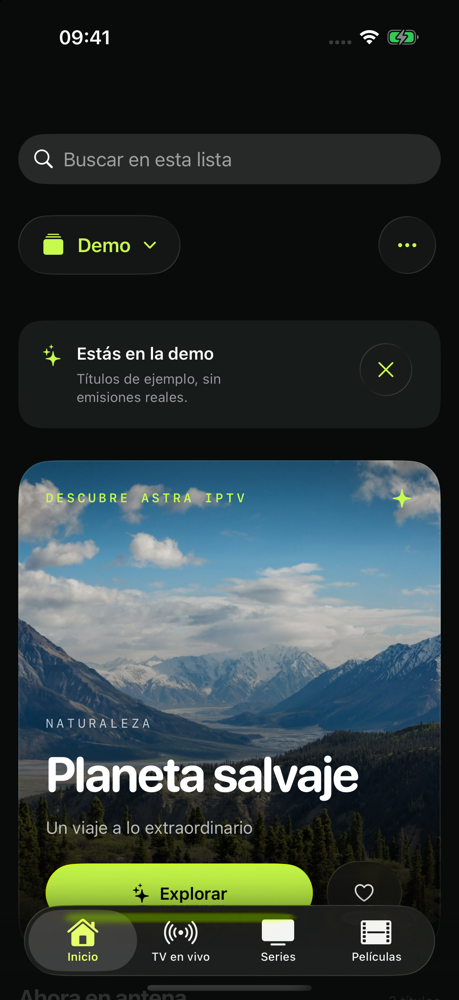
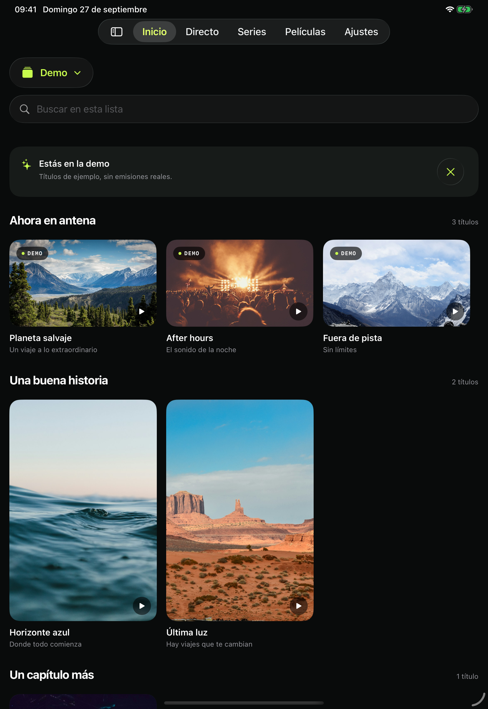

Tus listas, conectadas
Añade fuentes M3U/M3U8 o Xtream. Cambia de lista y conserva su catálogo, favoritos e historial por separado.
Un hogar para tus canales, películas y series. Astra IPTV reúne tus listas en una experiencia nativa para iPhone, iPad y Apple TV.
Aún no disponible en el App Store. Sin fecha de lanzamiento anunciada.

CAPTURA REAL · MODO DEMO
TODO EN SU SITIO
Conecta tus propias fuentes y encuentra lo que quieres ver. Una biblioteca organizada, controles familiares y una interfaz que deja espacio al contenido.
Añade fuentes M3U/M3U8 o Xtream. Cambia de lista y conserva su catálogo, favoritos e historial por separado.
Explora canales y consulta la programación con guías XMLTV. Accede a tus favoritos sin perderte entre menús.
Navega por películas y series, elige episodios y retoma el vídeo bajo demanda. Audio y subtítulos cuando la fuente los ofrece.
UNA EXPERIENCIA NATIVA
Pestañas en iPhone, una navegación adaptada al iPad y control con el mando en Apple TV. Una misma idea, pensada para cada pantalla.
AirPlay y Picture in Picture con el reproductor nativo, donde el sistema y el formato lo permiten.

ANTES DE EMPEZAR
Todavía no. La versión para iOS, iPadOS y tvOS está en desarrollo y aún no está disponible en el App Store. Esta web presenta el proyecto y sus funciones.
No. Astra IPTV no vende ni proporciona canales, listas, películas, series o suscripciones de televisión. Debes añadir tus propias fuentes y disponer de los derechos o permisos necesarios para reproducirlas.
La biblioteca se conserva en el dispositivo; iCloud sincroniza listas, datos de conexión, favoritos, progreso y ajustes en tu base privada cuando está disponible. Las credenciales locales se guardan en el llavero. Astra no incorpora una red publicitaria. Puedes elegir por separado compartir estadísticas con Firebase Analytics e informes de fallos con Crashlytics; ambas opciones están desactivadas inicialmente y se pueden cambiar en Ajustes. Los tráileres opcionales de YouTube pueden mostrar anuncios y están sujetos a las políticas de Google. Las fuentes y los servicios externos reciben las solicitudes necesarias. Consulta la política de privacidad.
Esta web no incorpora analítica, publicidad, formularios ni cookies propias. GitHub Pages aloja el sitio y puede registrar datos técnicos de las visitas según su declaración de privacidad.
Desarrollado por Juan Cazalla Estrella.